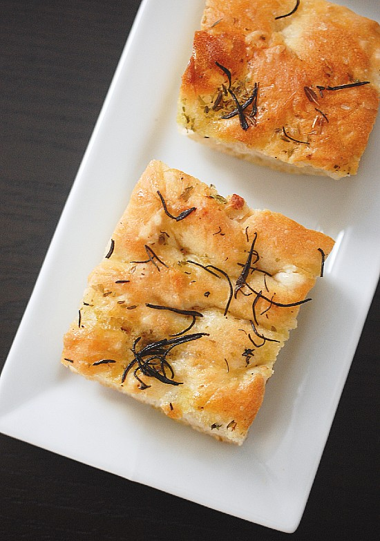

Focaccia

You too, are capable of making beautiful bread!
My favorite type of carb, and a popular favourite for family, friends and co-workers! What they don't have to know, is how easy this is to make!
- 7g of instant yeast
- 370g of warm water
- 500g of strong white bread flour
- 10g salt
- Garlic cloves, chopped into small chunks
- Mixed dry herbs
- Olive oil
- Add the warm water to the instant yeast in a large bowl and swish together with your fingers
- Add the flour and the salt to the bowl and mix together
- Leave for 30 minutes and enjoy your life
- Fold the dough in the bowl until the mixture feels stiff
- Cover the dough with clingfilm and leave for around 90 minutes
- Oil a baking tray and pour the dough into the tray. Stretch out with your fingers
- Preheat the over to 220C and let the dough rest for around 30 minutes
- Drizzle the dough with olive oil. Push your fingers into the dough to make dimples and sprinkle the garlic chunks and herbs over the dough
- Place the dough in the over for 25 minutes
- Let cool and enjoy!